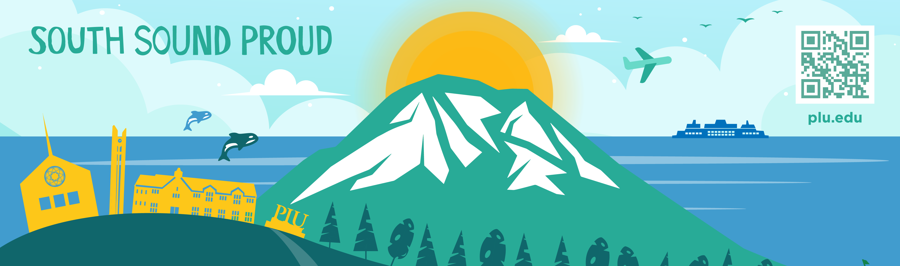
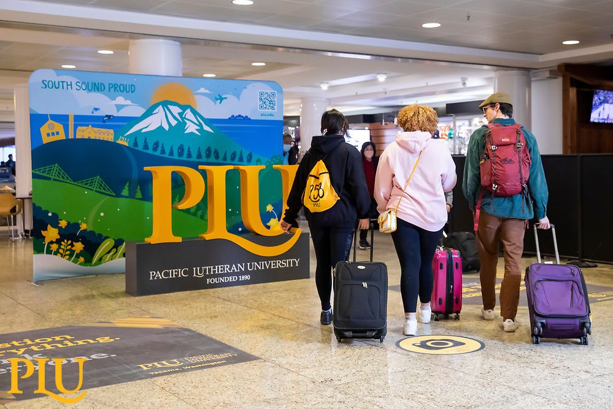
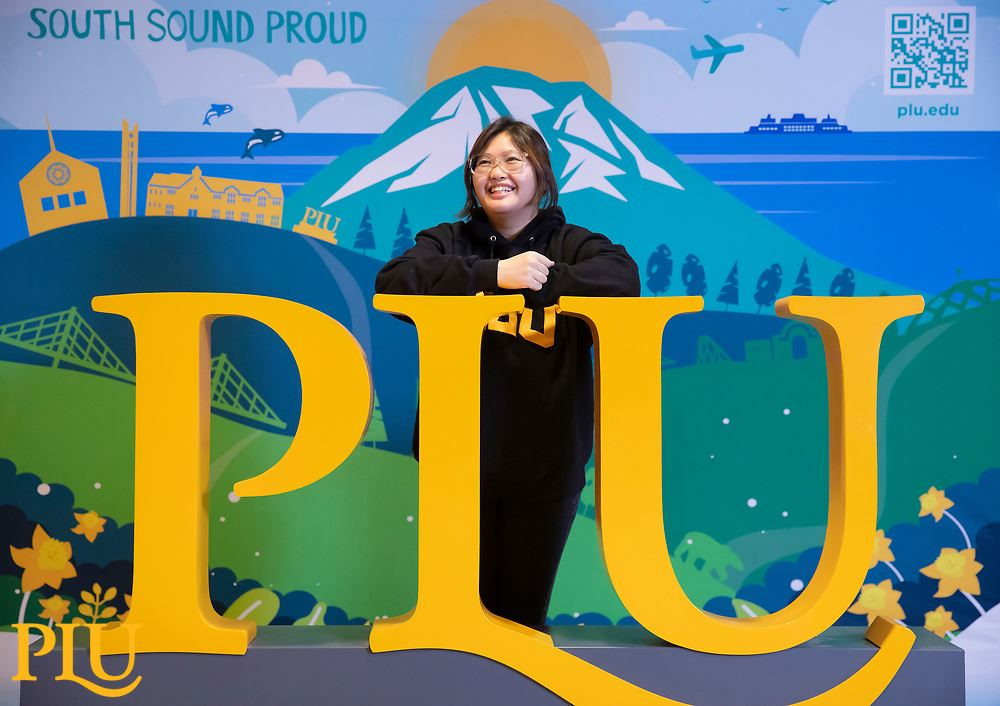
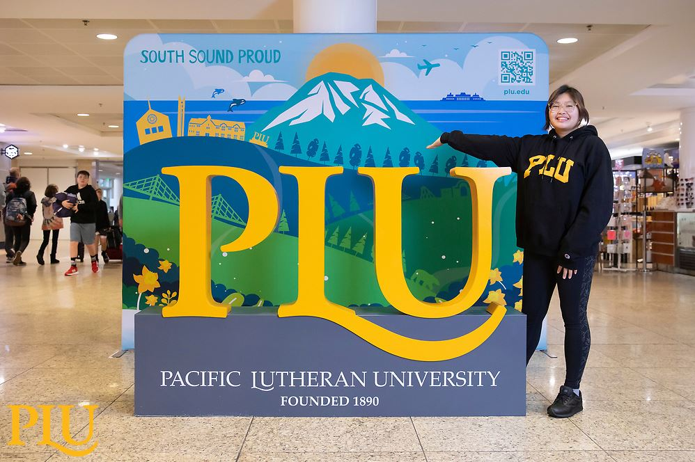
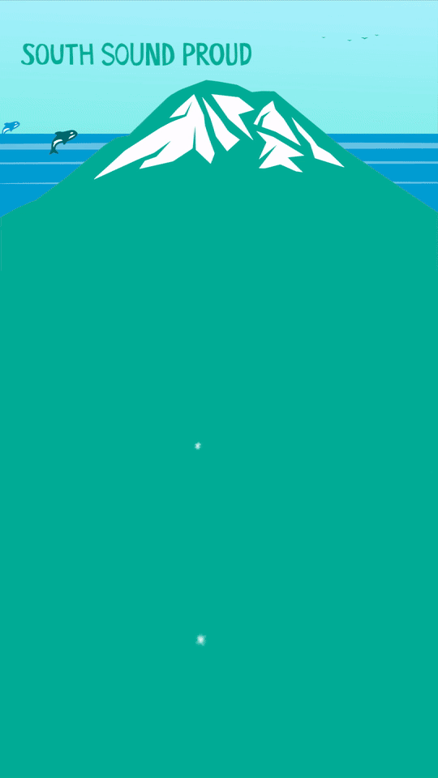
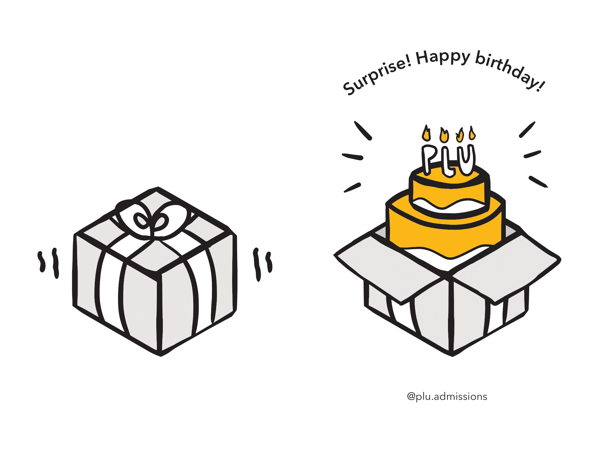
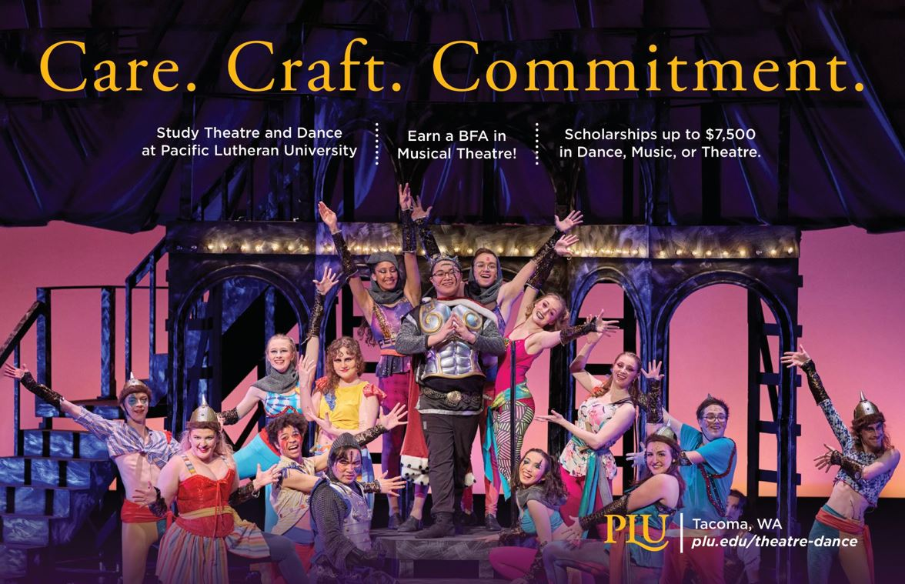

Marketing and Communications Design Internship 💛
In my first year of university, I applied for a graphic design internship with only passion projects as my experience and my love for art. From day one, I learned not only about how to be a better designer but a well-rounded person from the incredible mentorship I had. I interned for PLU for most of my years as a student and I am grateful for and proud of my growth from this experience.
Client
Pacific Lutheran University
Tools
InDesign, Illustrator, Photoshop, After Effects, Procreate
Time
September 2020 - December 2022

★ Seatac Airport Mural
My final project turned out to be a mural taller than me that would eventually be stationed inside the Seattle-Tacoma International Airport from November 2022 to February 2023. It was an interactive art piece that encouraged weary travelers passing by to take selfies, intending to be a photobooth. The piece stands tall and proud giving an illustrated snapshot of the Pacific Northwest, particularly the south sound region.




★ Infographic
This project challenged me the most and went through multiple iterations until I reached the final result through rounds of feedback, revision and reworking.
★ Birthday Cards
For my very first project assigned, I illustrated birthday greeting cards for the admissions department. It remains one of my favorite things I designed during this internship because of its charm and cute factor.


Projects Gallery


